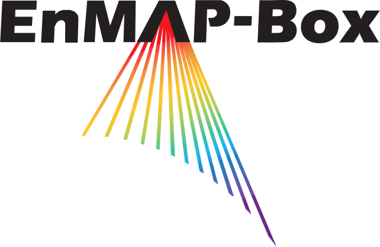

The EnMAP-Box is free and open source QGIS to visualize
and process remote sensing raster data.
It is particularly developed to handle imaging spectroscopy data, as from the upcoming EnMAP sensor.

A QGIS Plugin for Hyperspectral Remote Sensing
Graphical User Interface
Spectral Libraries
Highlights
an easy-to-use graphical user interface for the visualization of vector and raster
data sources in parallel and in spatially linked maps
collection and visualisation of spectral profiles spectral libraries. Spectral
profiles can come from different sources, e.g. raster images, field spectrometer or
table-sheets.
enhances the QGIS Processing Framework with many algorithms commonly used in remote
sensing and imaging spectroscopy, e.g. support vector machines or random forest based
raster
classification, regression, cluster approaches from the scikit-learn library.
applications specific to imaging spectroscopy and the EnMAP program, e.g. the
simulation of spectral profiles, atmospheric correction
of EnMAP data, mapping of geological classes from EnMAP data and more...
License
The EnMAP-Box is released under the GNU General Public License (GPL) Version 3 or above. A
copy of this licence can be found at http://www.gnu.org/licenses/gpl.html/.